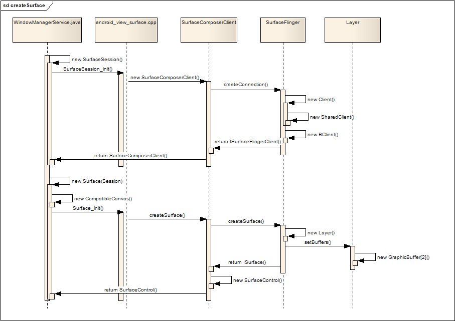
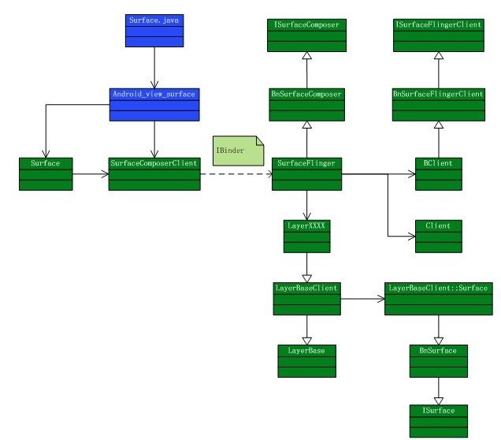

显示系统(Android 2.3)
相关文件
// java层
frameworks/base/core/java/android/view/Surface.java
frameworks/base/core/java/android/view/SurfaceSession.java
// JNI层
frameworks/base/core/jni/android_view_Surface.cpp
// C++层
frameworks/base/libs/surfaceflinger_client/SurfaceComposerClient.cpp
frameworks/base/libs/surfaceflinger_client/Surface.cpp
frameworks/base/libs/surfaceflinger_client/SharedBufferStack.cpp
frameworks/base/include/surfaceflinger/Surface.h
frameworks/base/include/surfaceflinger/SharedBufferStack.h
// HAL
hardware/libhardware/include/hardware/gralloc.h
hardware/libhardware/include/hardware/hardware.h
hardware/libhardware/modules/gralloc/gralloc.cpp
hardware/libhardware/modules/gralloc/framebuffer.cpp
frameworks/base/libs/ui/FramebufferNativeWindow.h
frameworks/base/include/ui/FramebufferNativeWindow.cpp
frameworks/base/services/surfaceflinger/DisplayHardware.cpp
概述
Android的显示系统从上到下分为Surface(Java层)、SurfaceSession(Java层)、SurfaceFlinger(C++层)，
Layer(C++层)等。
SurfaceFlinger在系统启动阶段作为系统服务被加载。应用程序中的每个窗口，对应Java层的Surface，
而Surface又对应于SurfaceFlinger中的各个Layer，SurfaceFlinger的主要作用是为这些Layer申请内存，根据
应用程序的请求管理这些Layer显示、隐藏、重画等操作，最终由SurfaceFlinger把所有的Layer组合到一起，
显示到屏幕上。当应用程序需要在一个Surface上进行画图操作时，首先要拿到这个Surface在内存中的起始地址，
而这块内存是在SurfaceFlinger中分配的，因为SurfaceFlinger和应用程序并不是运行在同一个进程中，如何在
应用客户端(Surface)和服务端(SurfaceFlinger — Layer)之间传递和同步显示缓冲区?这正是本文要讨论的内容。
窗口会话
-
我们从窗口初始化开始。WindowManagerService.Session是一个内部类，该类封装了SurfaceSession对象。Session类继承自IWindowSession.Stub，是关于窗口会话的抽象类，它不仅包括图像显示，还包括touch等事件。
-
显示会话被抽象成SurfaceSession类，它负责向Service申请内存。
-
WindowManagerService用HashSet保存所有窗口的Session对象。WindowManagerService在加入一个窗口时，会调用Session.windowAddedLocked方法，它首先初始化一个SurfaceSession对象，然后将自己保存到WindowManagerService的HashSet成员中。
-
接下来再看一个内部类WindowState，它是窗口状态的抽象。该类的attach方法会调用Session.windowAddedLocked。当窗口布局创建时，会使用WindowState.createSurfaceLocked方法创建Surface对象，而这时会传入刚刚创建的SurfaceSession对象作为初始化参数。
WindowManagerService
public class WindowManagerService extends IWindowManager.Stub
implements Watchdog.Monitor {
......
// 创建一个保存Session对象的set
final HashSet<Session> mSessions = new HashSet<Session>();
......
}
Session
private final class Session extends IWindowSession.Stub
implements IBinder.DeathRecipient {
SurfaceSession mSurfaceSession;
......
void windowAddedLocked() {
if (mSurfaceSession == null) {
// 当加入窗口时，创建一个SurfaceSession对象
mSurfaceSession = new SurfaceSession();
// 加入到HashSet中
mSessions.add(this);
}
mNumWindow++;
}
......
}
WindowState
WindowState(Session s, IWindow c, WindowToken token,
WindowState attachedWindow, WindowManager.LayoutParams a,
int viewVisibility) {
......
Surface createSurfaceLocked() {
if (mSurface == null) {
......
try {
// 通过mSession.mSurfaceSession来创建Surface
mSurface = new Surface(
mSession.mSurfaceSession, mSession.mPid,
mAttrs.getTitle().toString(),
0, w, h, mAttrs.format, flags);
} catch (Surface.OutOfResourcesException e) {
......
return null;
} catch (Exception e) {
return null;
}
......
Surface.openTransaction();
try {
try {
......
} catch (RuntimeException e) {
......
}
} finally {
Surface.closeTransaction();
}
}
return mSurface;
}
......
}
显示层会话
-
先看SurfaceSession类，它只是简单的对JNI层进行了封装，在初始化时调用了native层的init方法。
-
JAVA层通过JNI调用本地代码，本地代码创建一个SurfaceComposerClient的实例，该实例第一次引用会调用onFirstRef方法，getComposerService实际会返回SurfaceFlinger的Binder引用，并通过引用调用 SurfaceFlinger的createConnection，SurfaceFlinger返回一个ISurfaceComposerClient接口给SurfaceComposerClient。
-
在createConnection的过程中，SurfaceFlinger创建了用于管理缓冲区切换的Client对象，该对象实现ISurfaceComposerClient接口。
-
最后，本地层把SurfaceComposerClient的实例返回给JAVA层，完成SurfaceSession的建立。
SurfaceSession(Java层)
public class SurfaceSession {
public SurfaceSession() {
init();
}
public native void kill();
@Override
protected void finalize() throws Throwable {
destroy();
}
private native void init();
private native void destroy();
private int mClient;
}
SurfaceSession_init(JNI)
static void SurfaceSession_init(JNIEnv* env, jobject clazz)
{
sp<SurfaceComposerClient> client = new SurfaceComposerClient;
client->incStrong(clazz);
env->SetIntField(clazz, sso.client, (int)client.get());
}
SurfaceComposerClient::onFirstRef(C++)
void SurfaceComposerClient::onFirstRef()
{
sp<ISurfaceComposer> sm(getComposerService());
if (sm != 0) {
sp<ISurfaceComposerClient> conn = sm->createConnection();
if (conn != 0) {
mClient = conn;
Composer::addClient(this);
mPrebuiltLayerState = new layer_state_t;
mStatus = NO_ERROR;
}
}
}
显示层抽象
-
再看Surface类，它的构造方法先初始化了CompatibleCanvas对象，之后调用native层的init方法。
-
JAVA层通过JNI调用本地代码Surface_Init()，本地代码首先取得第一步创建的SurfaceComposerClient实例，通过 该实例调用ISurfaceComposerClient接口(Client对象)的createSurface方法，继而调用SurfaceFlinger.createSurface。
-
SurfaceFlinger根据参数，创建不同类型的Layer，然后返回该Layer的ISurface接口，SurfaceComposerClient使用这个ISurface接口创建一个SurfaceControl实例，并把这个SurfaceControl返回给JAVA层。
-
Java层的Surface实际上对应于native的SurfaceControl对象，以后native可以通过SurfaceControl的getSurface方法，获得C++层的Surface对象；
Surface(Java层)
public Surface(SurfaceSession s,
int pid, int display, int w, int h, int format, int flags)
// 创建CompatibleCanvas对象
mCanvas = new CompatibleCanvas();
// 调用native的init
init(s,pid,null,display,w,h,format,flags);
}
Surface_init(JNI)
static void Surface_init( JNIEnv* env, jobject clazz, jobject session,
jint pid, jstring jname, jint dpy, jint w, jint h, jint format, jint flags)
{
......
SurfaceComposerClient* client =
(SurfaceComposerClient*)env->GetIntField(session, sso.client);
sp<SurfaceControl> surface;
if (jname == NULL) {
surface = client->createSurface(pid, dpy, w, h, format, flags);
} else {
......
}
......
// 返回给Java层
setSurfaceControl(env, clazz, surface);
}
SurfaceComposerClient::createSurface(C++)
sp<SurfaceControl> SurfaceComposerClient::createSurface( int pid,
const String8& name, DisplayID display, uint32_t w, uint32_t h,
PixelFormat format, uint32_t flags)
{
sp<SurfaceControl> result;
if (mStatus == NO_ERROR) {
ISurfaceComposerClient::surface_data_t data;
// mClient为初始化时获取的ISurfaceComposerClient接口，
// 及SurfaceFlinger的Binder引用
sp<ISurface> surface = mClient->createSurface(&data, pid, name,
display, w, h, format, flags);
if (surface != 0) {
result = new SurfaceControl(this, surface, data, w, h, format, flags);
}
}
return result;
}
Client::createSurface(C++)
sp<ISurface> Client::createSurface(
ISurfaceComposerClient::surface_data_t* params, int pid,
const String8& name,
DisplayID display, uint32_t w, uint32_t h, PixelFormat format,
uint32_t flags)
{
return mFlinger->createSurface(this, pid, name, params,
display, w, h, format, flags);
}
SurfaceFlinger::createSurface(C++)
sp<ISurface> SurfaceFlinger::createSurface(const sp<Client>& client, int pid,
const String8& name, ISurfaceComposerClient::surface_data_t* params,
DisplayID d, uint32_t w, uint32_t h, PixelFormat format, uint32_t flags)
{
sp<LayerBaseClient> layer;
sp<LayerBaseClient::Surface> surfaceHandle;
......
sp<Layer> normalLayer;
// 创建Layer
switch (flags & eFXSurfaceMask) {
case eFXSurfaceNormal:
if (UNLIKELY(flags & ePushBuffers)) {
layer = createPushBuffersSurface(client, d, w, h, flags);
} else {
normalLayer = createNormalSurface(client, d, w, h, flags, format);
layer = normalLayer;
}
break;
case eFXSurfaceBlur:
layer = createBlurSurface(client, d, w, h, flags);
break;
case eFXSurfaceDim:
layer = createDimSurface(client, d, w, h, flags);
break;
}
if (layer != 0) {
layer->initStates(w, h, flags);
layer->setName(name);
ssize_t token = addClientLayer(client, layer);
// 获取SurfaceHandle
surfaceHandle = layer->getSurface();
......
setTransactionFlags(eTransactionNeeded);
}
return surfaceHandle;
}
Surface创建时序图

C++层的Surface显示实现
-
在IBinder左边的就是客户端部分，也就是需要窗口显示的应用程序，而右边就是SurfaceFlinger。创建一个Surface(C++层)分为两个过程，一个是在SurfaceFlinger 这边为每个应用程序(Client) 创建一个管理结构，另一个就是创建存储内容的buffer，以及在这个buffer上的一系列画图之类的操作。
-
在新版本的Android中，BClient对应
UserClient，Client对应SharedClient。

在缓冲区上绘画
缓冲区管理
SurfaceFlinger工作线程
显示系统HAL层
{kind=link}
{kind=link}